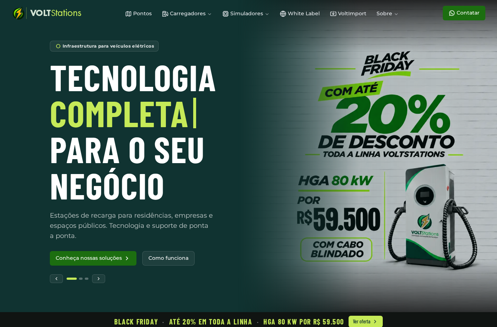

Sistema de Investigação de Marca e Identidade Online
https://voltstations.com.br/
Prioridade: MEDIUM · Cenário: B_AMBIGUOUS_COMMUNICATION · Revisão humana: PENDING
O site pertence à Volt Stations (CNPJ 57.022.778/0001-19), empresa focada na comercialização de estações de recarga para veículos elétricos e confirmada como COBAN autorizado na base cadastral do Banco BV. A menção ao Banco BV e a inserção de seu logotipo ocorrem de modo secundário, vinculadas à oferta de financiamento dos equipamentos, sem tentativa de personificação ou overbranding abusivo. Entretanto, por não constar a declaração regulatória ostensiva de correspondente bancário nem o contato da ouvidoria do banco, enquadra-se no cenário B_AMBIGUOUS_COMMUNICATION, demandando adequação de transparência regulatória. [Revisor: CONFIRM] A análise está correta e cumpre as diretrizes regulatórias e metodológicas. Trata-se de um COBAN autorizado (CNPJ 57.022.778/0001-19) atuando no segmento de infraestrutura de recarga veicular elétrica. A empresa promove financiamento em parceria com o Banco BV, exibindo o logotipo da instituição financeira sem apresentar overbranding, mas sem incluir a menção formal e ostensiva à condição de correspondente bancário e a indicação de canal de ouvidoria (Resolução CMN nº 4.935/2021). A manutenção da classificação REVIEW_REQUIRED com prioridade MEDIUM é apropriada.

| Ref | Tipo | Local | Conteúdo |
|---|---|---|---|
| E-URL | domain | url | URL final: https://voltstations.com.br/ (domínio: voltstations.com.br) |
| E-COLLECT | network | collection | Status da coleta: OK; HTTP 200; ocorrências: network did not become idle (continuing) |
| E-DISC-001 | text | search_index | Índice de busca (grounding): voltstations.com.br — **URL:** `https://www.voltstations.com.br/` |
| E-SHOT-VIEWPORT | screenshot | viewport | evidence/Cf56a77fc85/attempt-1/viewport.png (sha256 28826527e222e0e0…) |
| E-SHOT-FULL | screenshot | page | evidence/Cf56a77fc85/attempt-1/fullpage.png (sha256 2baec3fce59333ce…) |
| E-TITLE | title | head | Estações de recarga para veículos elétricos | Volt Stations |
| E-META-1 | meta | head | description: Descubra as estações de recarga da Volt Stations para veículos elétricos com tecnologia AC/DC de alta performance. Soluções sustentáveis para residências e empresas. |
| E-META-2 | meta | head | og:site_name: Volt Stations |
| E-META-3 | meta | head | og:title: Estações de recarga para veículos elétricos | Volt Stations |
| E-META-4 | meta | head | og:description: Descubra as estações de recarga da Volt Stations para veículos elétricos com tecnologia AC/DC de alta performance. Soluções sustentáveis para residências e empresas. |
| E-META-5 | meta | head | author: Volt Stations |
| E-CANONICAL | meta | head | https://voltstations.com.br/ |
| E-HEAD-1 | heading | page | TECNOLOGIA COMPLETA COMPLETA PARA O SEU NEGÓCIO |
| E-HEAD-2 | heading | page | Por que escolher a Volt Stations? |
| E-HEAD-3 | heading | page | Garantia estendida |
| E-HEAD-4 | heading | page | Eficiência de 98% |
| E-HEAD-5 | heading | page | Certificados internacionais |
| E-HEAD-6 | heading | page | Consultoria completa |
| E-HEAD-7 | heading | page | Vida útil validada |
| E-HEAD-8 | heading | page | Carregadores personalizados |
| E-HEAD-9 | heading | page | Fabricação inteligente |
| E-HEAD-10 | heading | page | Cabo blindado |
| E-HEAD-11 | heading | page | Conheça a Volt Stations |
| E-HEAD-12 | heading | page | Nosso Catálogo |
| E-HEAD-13 | heading | page | 20% |
| E-HEAD-14 | heading | page | Linha Premium |
| E-HEAD-15 | heading | page | DC VOLT AF-DC PREMIUM |
| E-HDR | text | header | VOLT S tations Pontos Carregadores Simuladores White Label VoltImport Sobre Contatar |
| E-FOLD | text | viewport (acima da dobra) | VOLT S tations Pontos Carregadores Simuladores White Label VoltImport Sobre Contatar Infraestrutura para veículos elétricos Tecnologia completa completa para o seu negócio Estações de recarga para residências, empresas e espaços públicos. Tecnologia e suporte de ponta a ponta. Conheça nossas soluções Como funciona Black Friday · Até 20% em toda a linha · HGA 80 kW por R$ 59.500 Ver oferta |
| E-FTR | text | footer | VOLT S tations Infraestrutura de recarga para veículos elétricos. Tecnologia, instalação e suporte de ponta a ponta. CNPJ 57.022.778/0001-19 São Paulo · Caruaru CONTATOS +55 (11) 95022-3727 comercial@voltstations.com.br ATENDIMENTO AO PÚBLICO Avenida Getúlio Vargas, 22-25, sala 2104-Bloco 01, Parque Jardim Europa, Bauru, SP Edifício Empresarial Difusora, sala 709, 12° andar. Av. Agamenon Magalhães, Caruaru, PE NAVEGAÇÃO Início Pontos White Label VoltImport CARREGADORES Catálogo Completo Carregadores AC Carregadores DC Comparativo de Carregadores Dimensionamento de Carga SIMULADORES Simulador de Faturamento Simulador de Recarga SOBRE Nossos Parceiros Nossa Equipe Nosso Escritório A Volt Stations © 2026 Volt Stations. Todos os direitos reservados. Termos & Condições Política de Privacidade |
| E-NAV | nav | header | VOLT S tations <https://voltstations.com.br/> | Pontos <https://voltstations.com.br/pontos> | White Label <https://voltstations.com.br/white-label> | VoltImport <https://voltstations.com.br/volt-import> |
| E-CTA-1 | cta | header | Carregadores |
| E-CTA-2 | cta | header | Simuladores |
| E-CTA-3 | cta | header | Sobre |
| E-CTA-4 | cta | header | Contatar |
| E-CTA-5 | cta | page | Conheça nossas soluções |
| E-CTA-6 | cta | page | Como funciona |
| E-CTA-7 | cta | nav | Imagem anterior |
| E-CTA-8 | cta | nav | Ir para imagem 1 |
| E-CTA-9 | cta | nav | Ir para imagem 2 |
| E-CTA-10 | cta | nav | Ir para imagem 3 |
| E-CTA-11 | cta | nav | Próxima imagem |
| E-CTA-12 | cta | page | Ver oferta |
| E-CTA-13 | cta | page | Fale com um especialista |
| E-CTA-14 | cta | page | Reproduzir apresentação |
| E-CTA-15 | cta | page | Quero essa condição |
| E-CTA-16 | cta | page | Falar com comercial |
| E-CTA-17 | cta | page | Reproduzir vídeo da oferta HGA 80 kW |
| E-CTA-18 | cta | page | Quero financiar |
| E-CTA-19 | cta | page | Falar com comercial |
| E-CTA-20 | cta | page | Fale com um especialista |
| E-CONTACT-1 | contact | footer | +55 (11) 95022-3727 <https://wa.me/5511950223727> |
| E-CONTACT-2 | contact | footer | comercial@voltstations.com.br <mailto:comercial@voltstations.com.br> |
| E-CONTACT-3 | contact | footer | Facebook <https://www.facebook.com/share/1C7MYHaMGq/> |
| E-CONTACT-4 | contact | footer | Instagram <https://www.instagram.com/volt.stations> |
| E-IMG-1 | image | header (acima da dobra) | imagem alt='Ícone da marca Volt Stations' src=https://voltstations.com.br/_nuxt/logo.DgijJ_Cp.png (38x38, acima da dobra) |
| E-IMG-2 | image | page | imagem alt='Logo banco BV' src=https://voltstations.com.br/_nuxt/bv-financeira.C1xI27dl.jpeg (64x64, abaixo da dobra) |
| E-TXT-001 | text | page | Parceiro financeiro |
| E-TXT-002 | text | page | Financie seus carregadores com o banco BV |
| E-TXT-003 | text | page | A Volt Stations e o banco BV facilitam a aquisição de carregadores AC e DC para residências, empresas e eletropostos. Invista em mobilidade elétrica com condições especiais de crédito, sujeitas à análise. |
| E-TXT-004 | text | page | Condições, prazos e taxas variam conforme perfil e análise de crédito do banco BV. |
| E-TXT-005 | text | page | Após a aprovação, o crédito é liberado diretamente ao instalador parceiro. |
| E-TXT-006 | text | page | CNPJ 57.022.778/0001-19 |
| E-TXT-007 | text | page | ATENDIMENTO AO PÚBLICO |
| E-TXT-008 | text | page | Nossos Parceiros |
| Dimensão | Sinal | Achado | Refs |
|---|---|---|---|
| VISUAL_IDENTITY | LEGITIMATE | A identidade visual corporativa da Volt Stations domina integralmente a estrutura da página, com cores próprias, tipografia e catálogo de produtos de eletromobilidade. | E-SHOT-VIEWPORT E-SHOT-FULL E-IMG-1 |
| DECLARED_COMMERCIAL_IDENTITY | LEGITIMATE | Identificação empresarial completa e clara da Volt Stations, indicando CNPJ 57.022.778/0001-19, endereços físicos em Bauru/SP e Caruaru/PE e canais de suporte próprios. | E-FTR E-TXT-006 E-CONTACT-1 E-CONTACT-2 |
| CORRESPONDENT_TRANSPARENCY | CONFUSION | A empresa cita o Banco BV como parceiro financeiro para crédito, mas omite a declaração formal de correspondente bancário contratado e os contatos de ouvidoria do banco. | E-TXT-001 E-TXT-002 E-TXT-003 E-FTR |
| INSTITUTIONAL_LANGUAGE | LEGITIMATE | O texto refere-se ao Banco BV em terceira pessoa ('com o banco BV', 'análise de crédito do banco BV'), deixando evidente que a concessão de crédito decorre de avaliação da instituição financeira. | E-TXT-002 E-TXT-003 E-TXT-004 |
| LOGO_USAGE | NEUTRAL | Logotipo do Banco BV aplicado de forma secundária e pontual em card explicativo sobre linhas de crédito para carregadores. | E-IMG-2 E-TXT-002 |
| SERVICE_JOURNEY | NEUTRAL | O botão 'Quero financiar' integra-se ao atendimento comercial e consultoria técnica da Volt Stations. | E-CTA-18 E-CTA-19 |
| CONTACT_CHANNELS | LEGITIMATE | Canais de contato (WhatsApp, e-mail e redes sociais) pertencem estritamente à Volt Stations. | E-CONTACT-1 E-CONTACT-2 E-CONTACT-3 E-CONTACT-4 |
| CONSUMER_CONFUSION | NEUTRAL | Não há risco iminente de o consumidor acreditar que a Volt Stations é o próprio banco, contudo a falta de explicitação do vínculo como correspondente gera imprecisão quanto ao papel regulatório desempenhado. | E-TXT-001 E-TXT-003 |
O site pertence à Volt Stations (CNPJ 57.022.778/0001-19), empresa focada na comercialização de estações de recarga para veículos elétricos e confirmada como COBAN autorizado na base cadastral do Banco BV. A menção ao Banco BV e a inserção de seu logotipo ocorrem de modo secundário, vinculadas à oferta de financiamento dos equipamentos, sem tentativa de personificação ou overbranding abusivo. Entretanto, por não constar a declaração regulatória ostensiva de correspondente bancário nem o contato da ouvidoria do banco, enquadra-se no cenário B_AMBIGUOUS_COMMUNICATION, demandando adequação de transparência regulatória.
CNPJ 57.022.778/0001-19 observado na página consta do cadastro autorizado 'coban_registry_bv.csv (ref. 2026-10-06)'.
| Tipo | Valor | Ref | Contexto |
|---|---|---|---|
| domain | voltstations.com.br | E-URL | |
| cnpj | 57.022.778/0001-19 | E-FTR | LT S tations Infraestrutura de recarga para veículos elétricos. Tecnologia, instalação e suporte de ponta a ponta. CNPJ 57.022.778/0001-19 |
| comercial@voltstations.com.br | E-FTR | ||
| social_profile | https://www.facebook.com/share/1C7MYHaMGq/ | E-CONTACT-3 | |
| social_profile | https://www.instagram.com/volt.stations | E-CONTACT-4 | |
| trade_name | Volt Stations | E-META-2 | |
| phone | (11) 95022-3727 | E-FTR | |
| +55 (11) 95022-3727 <https://wa.me/5511950223727> | E-CONTACT-1 |
Mapeamento indicativo para apoio à auditoria. Não constitui conclusão regulatória; a decisão definitiva pertence à auditoria.
Fonte: NORMATIVE
Art. 14. O contrato de correspondente deve estabelecer: [...] II - vedação à utilização, pelo contratado, de logomarca ou de outros atributos que sejam similares aos adotados pela instituição contratante em suas agências, postos de atendimento, sítio eletrônico na internet, aplicativo ou outras plataformas de comunicação em rede;
Hipótese: Uso de logomarca, uso excessivo/desproporcional ou de atributos similares aos adotados pela contratante em seus canais
Evidência observada: E-IMG-2 E-TXT-001 E-TXT-002
Informação faltante:
Fonte: NORMATIVE
Art. 14. O contrato de correspondente deve estabelecer: [...] III - divulgação ao público, pelo contratado, de sua condição de prestador de serviços à instituição contratante, identificada pelo nome com que é conhecida no mercado, com descrição dos produtos e serviços oferecidos e canais de contato da instituição contratante, inclusive de sua ouvidoria, em local visível, em destaque e em formato legível, por meio de: a) sítio eletrônico do correspondente na internet, acessível na página inicial; b) aplicativo e outras plataformas de comunicação em rede do correspondente; [...]
Hipótese: Divulgação ao público da condição de prestador de serviços/parceria ausente, insuficiente, ambígua ou sem destaque
Evidência observada: E-FTR E-TXT-001 E-TXT-002 E-TXT-003 E-TXT-004
Informação faltante:
Fonte: NORMATIVE
Art. 3º O correspondente atua por conta e sob as diretrizes da instituição contratante, que assume inteira responsabilidade pelo atendimento prestado aos clientes e usuários por meio do contratado.
Evidência observada: E-CONTACT-1 E-CONTACT-2 E-CONTACT-3 E-CONTACT-4
Limitações: requisitos contratuais/internos não fornecidos: mapeamento limitado ao texto normativo
Decisão: CONFIRM → REVIEW_REQUIRED / MEDIUM
A análise está correta e cumpre as diretrizes regulatórias e metodológicas. Trata-se de um COBAN autorizado (CNPJ 57.022.778/0001-19) atuando no segmento de infraestrutura de recarga veicular elétrica. A empresa promove financiamento em parceria com o Banco BV, exibindo o logotipo da instituição financeira sem apresentar overbranding, mas sem incluir a menção formal e ostensiva à condição de correspondente bancário e a indicação de canal de ouvidoria (Resolução CMN nº 4.935/2021). A manutenção da classificação REVIEW_REQUIRED com prioridade MEDIUM é apropriada.
| Tema | Severidade | Questionamento | Refs |
|---|---|---|---|
| Nenhum questionamento | |||
| Fonte | Consulta / hipótese | URL original | Título / trecho |
|---|---|---|---|
| grounding | Objetivo: Páginas de financiamento que expõem arquivos de logotipo da marca ou logo antiga (B vermelho / V azul).
Execute no Google Search as seguintes consultas (dorks):
- (inurl:logo-bv OR "logo-bv" OR "logo-bv-financeira" OR "logo antiga bv" OR "bv logo antiga") (financiamento OR veículos OR crédito) -site:bv.com.br -site:bancobv.com.br -site:bvfinanceira.com.br -site:bvinvestimentos.com.br -site:napista.com.br -site:bvopen.com.br -site:meufinanciamentosolar.com.br -site:votorantim.com.br -site:vam.com.br -site:reclameaqui.com.br -site:jusbrasil.com.br -site:jus.br
- ("Logo Banco BV" OR "Logo bv financeira" OR "logo BV" OR "logo BV Financeira") (financiamento OR veículos OR consignado) -site:brandsoftheworld.com -site:logospng.org -site:bv.com.br -site:bancobv.com.br -site:bvfinanceira.com.br -site:bvinvestimentos.com.br -site:napista.com.br -site:bvopen.com.br -site:meufinanciamentosolar.com.br -site:votorantim.com.br -site:vam.com.br -site:reclameaqui.com.br -site:jusbrasil.com.br -site:jus.br
- ("BV Financeira" OR "Banco BV") ("logo antiga" OR "logotipo antigo" OR "marca antiga") -site:bv.com.br -site:bancobv.com.br -site:bvfinanceira.com.br -site:bvinvestimentos.com.br -site:napista.com.br -site:bvopen.com.br -site:meufinanciamentosolar.com.br -site:votorantim.com.br -site:vam.com.br -site:reclameaqui.com.br -site:jusbrasil.com.br -site:jus.br
Liste de forma abrangente as páginas públicas encontradas (até 12 resultados distintos), informando para cada uma o nome do estabelecimento/perfil, a URL e como a marca é utilizada (destaque visual, título, feirão, simulador, redes sociais e se há ou não identificação clara de CNPJ e condição de correspondente bancário). H1-identity:logo-assets | https://voltstations.com.br/ | voltstations.com.br **URL:** `https://www.voltstations.com.br/` |
Original: https://voltstations.com.br/
Final: https://voltstations.com.br/
| Artefato | Caminho | SHA-256 | Bytes |
|---|---|---|---|
| screenshot_viewport | evidence/Cf56a77fc85/attempt-1/viewport.png | 28826527e222e0e09a377776f1a49100e2dfc7c6c74c34e66ed48fe83d80a5a0 | 579187 |
| screenshot_full | evidence/Cf56a77fc85/attempt-1/fullpage.png | 2baec3fce59333ce0e132242fad6d0c3012275c4e13fa037b24193733704e06e | 2685231 |
| html | evidence/Cf56a77fc85/attempt-1/page.html.txt | 4a88ac7f1308ec39a8a995e19d659be9a8f104a6186f33bd9451b5f1d12712a3 | 123367 |
| text | evidence/Cf56a77fc85/attempt-1/text.txt | 4da0202dbbdfeb49523f424faeb145f79ac11a180b72d80e65fcb556965da174 | 5888 |
| page_data | evidence/Cf56a77fc85/attempt-1/page.json | 0b32ba220327ba597e05d3f5294dffc930151effb3f133b234bcda57061dd1ed | 20021 |
| Quando | De | Para | Nota |
|---|---|---|---|
| 2026-11-25T18:12:12+00:00 | DISCOVERED | QUEUED | prioritised (score 0.5) |
| 2026-11-25T19:34:49+00:00 | QUEUED | COLLECTING | |
| 2026-11-25T19:35:00+00:00 | COLLECTING | COLLECTED | |
| 2026-11-25T19:35:00+00:00 | COLLECTED | ANALYZING | |
| 2026-11-25T19:35:43+00:00 | ANALYZING | REVIEWING | |
| 2026-11-25T19:35:57+00:00 | REVIEWING | COMPLETED |